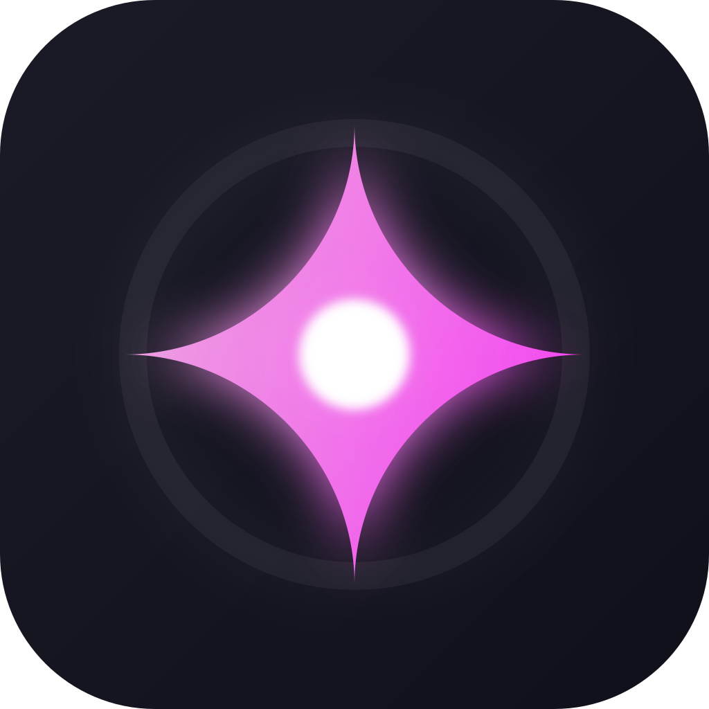
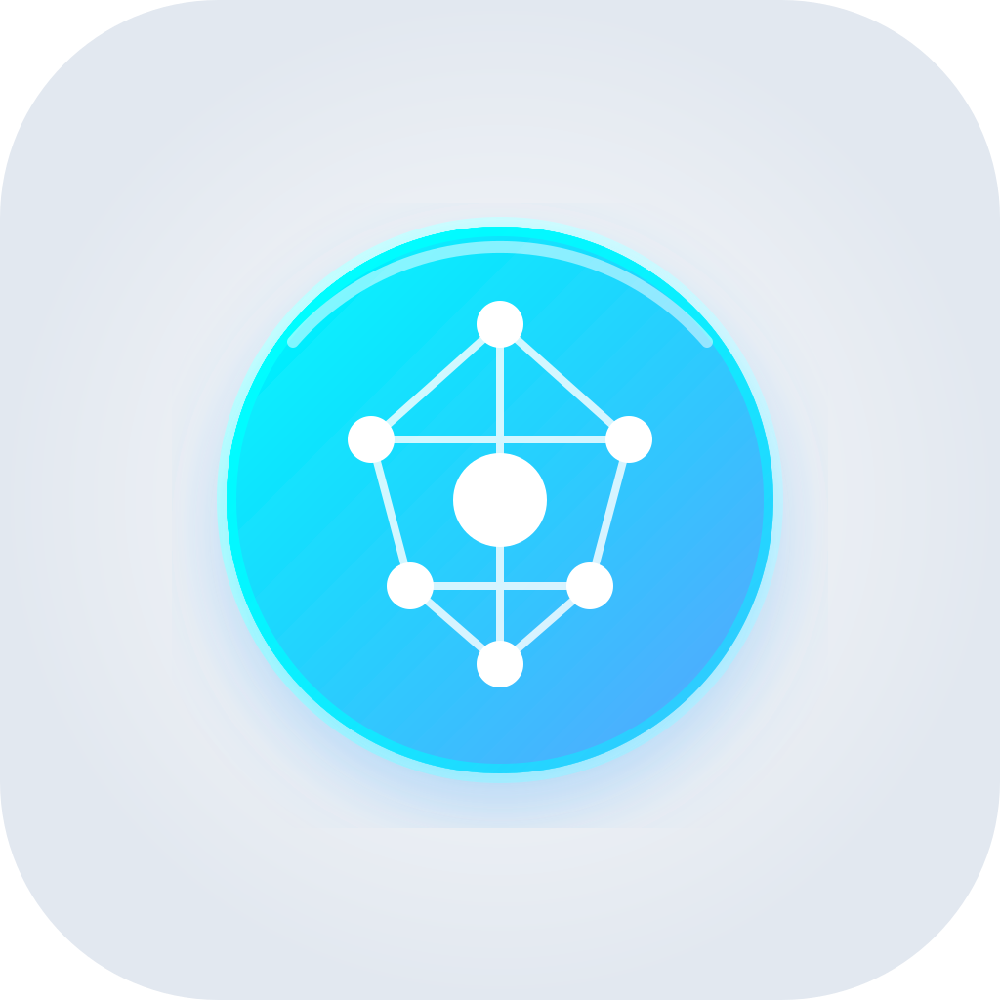
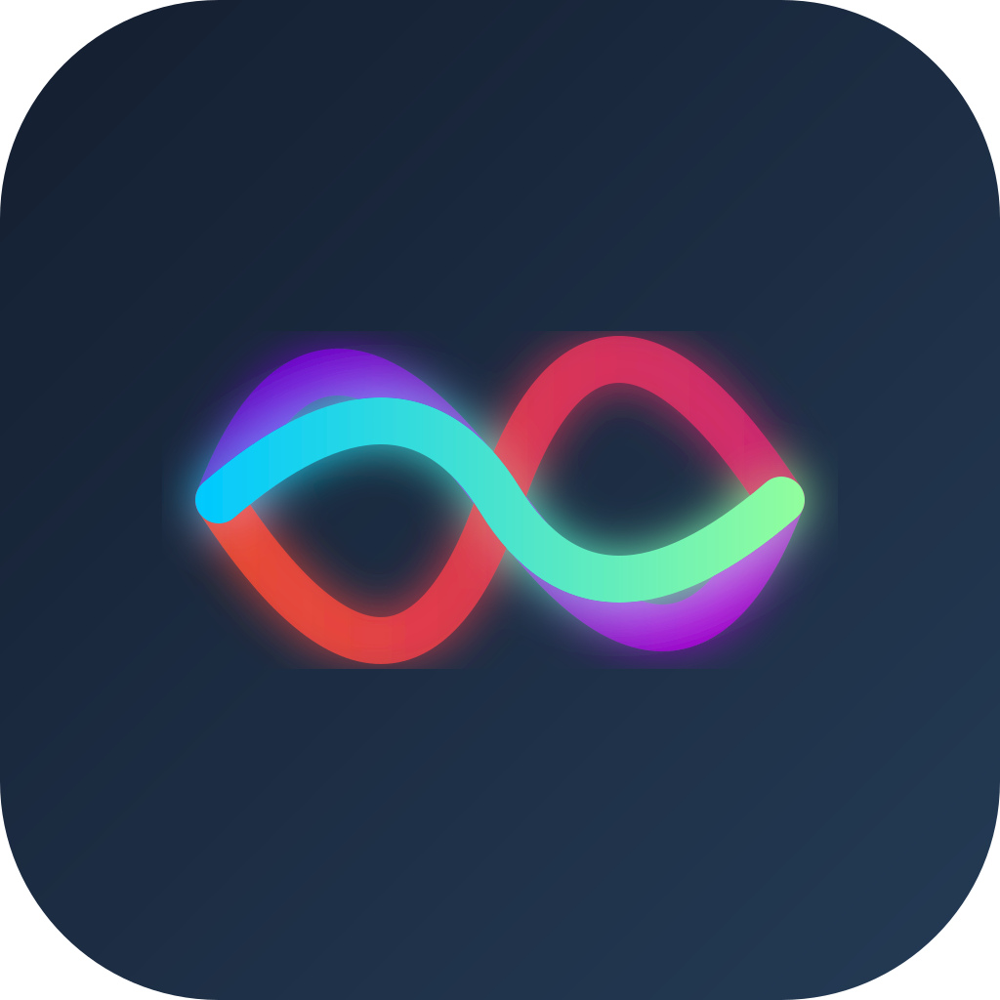
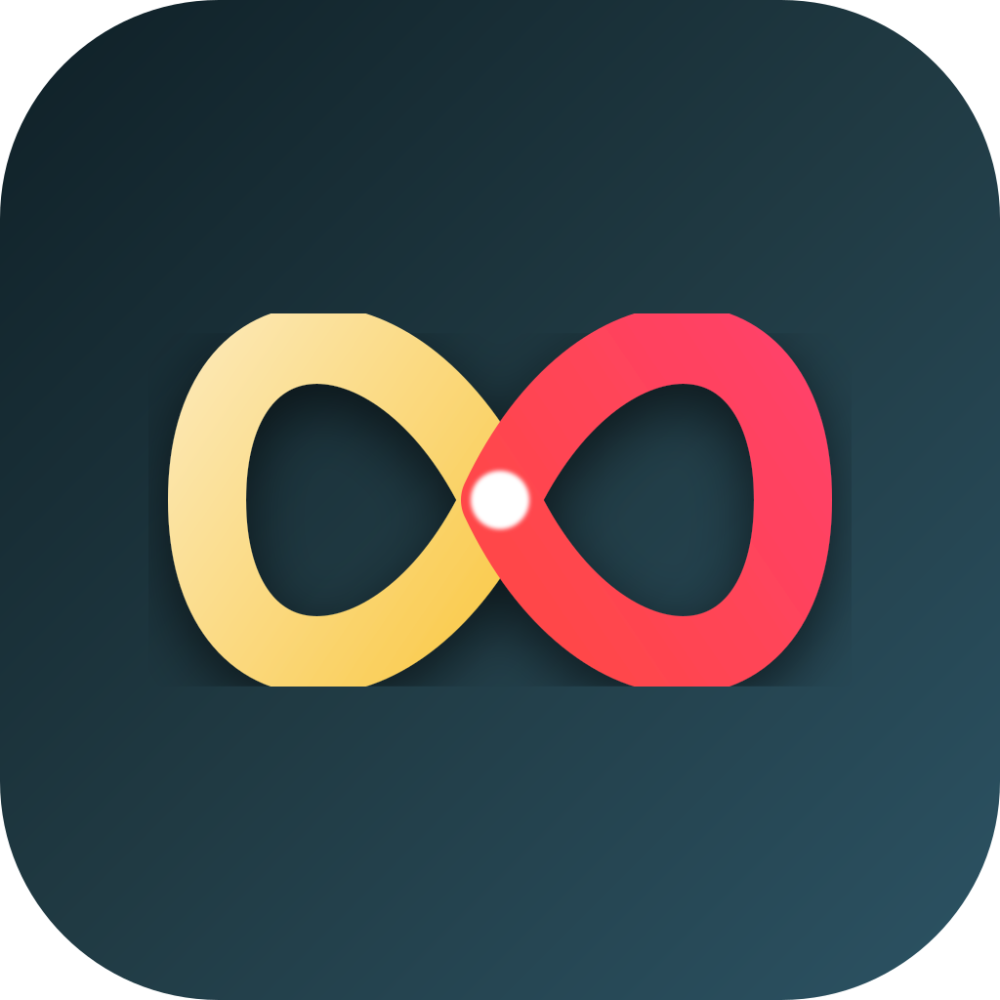
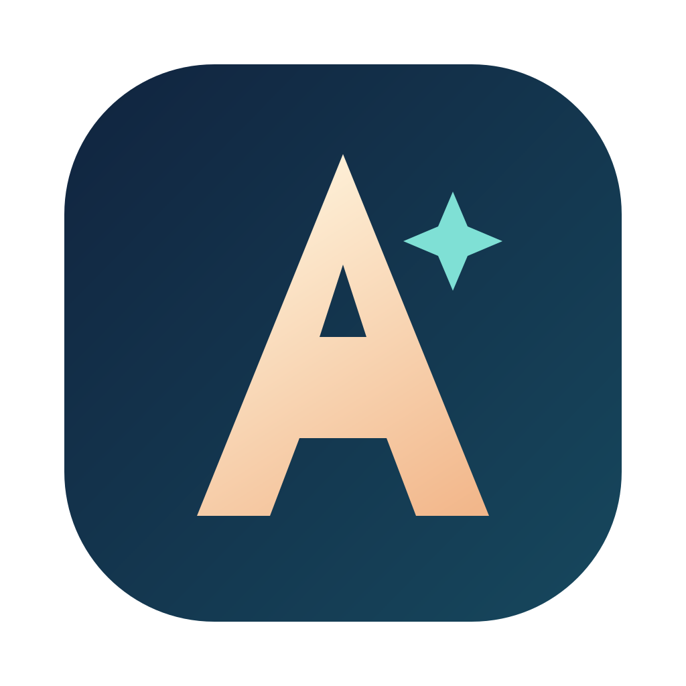
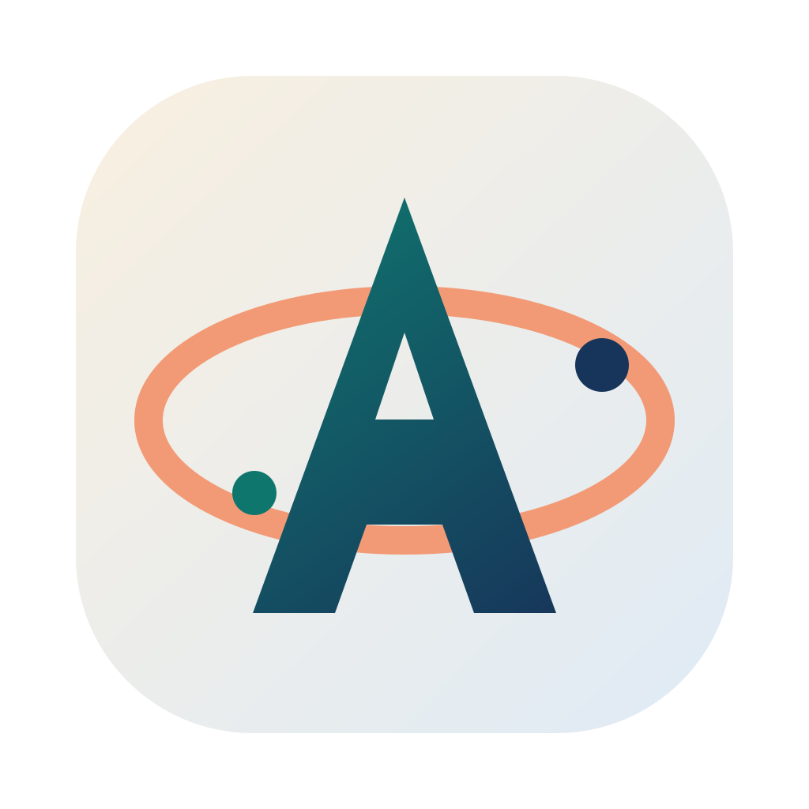

Ассистент: Концепты Иконок
Премиальные, современные и красивые варианты. Использованы сочные градиенты, неограниченные возможности (петля), искусственный интеллект (искра) и нейросетевая структура (ядро).

1. Nexus Spark
- Ассоциация с «магией» ИИ (как Apple Intelligence)
- Темный премиальный фон с яркими градиентами
- Суперсовременный и узнаваемый силуэт

2. Neural Core
- В стиле Glassmorphism
- Отсылка к нейросетям и сложным связям
- Светлый, дружелюбный и технологичный

3. Aurora Wave
- Отлично подходит для голосового ассистента
- Плавность, отзывчивость, динамика звука
- Яркий, неоновый киберпанк/софт-дизайн

4. Infinity Loop
- Символ бесконечных возможностей
- Простая и чистая геометрия, отлично для favicon
- Теплые, сочные цвета для привлечения внимания

5. A Arch
- Чёткая буква A без ощущения “школьного логотипа”
- Хорошо читается как favicon и app icon
- Самый практичный буквенный вариант

6. A Spark
- Более тёмный и премиальный характер
- Есть намёк на “умность” через искру
- Лучше смотрится как знак продукта

7. A Orbit
- Буква A плюс идея связей и модулей
- Чуть интереснее обычной монограммы
- Хороший компромисс между знаком и символом
Если хочется идти через букву A, я бы смотрел в первую очередь на 5 и 7.
Из них 5 более чистый и универсальный, а 7 чуть более характерный.